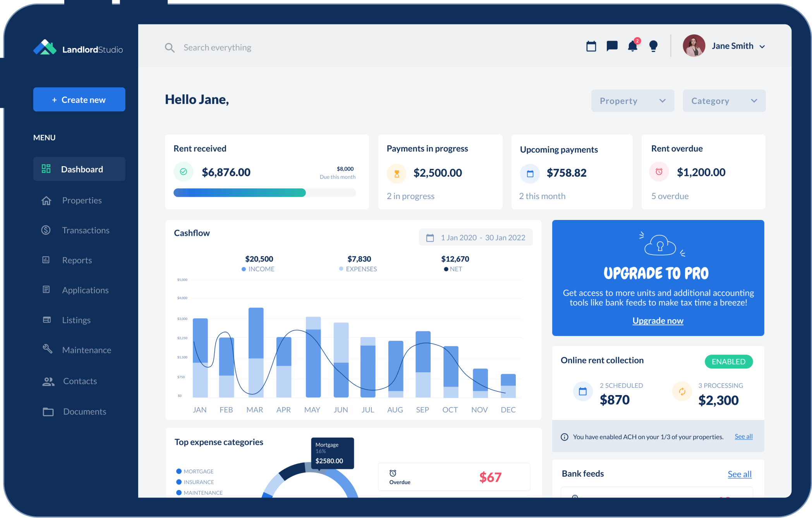
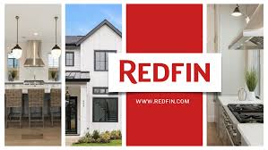

Kitae Kim
Table of Contents
1 – Systems
Rental Housing System for Foreigners in NY


The rental housing system for foreigners in New York City involves several key stages and components, each contributing to the overall dynamics of the system. This system includes various elements such as the rental properties, landlords, real estate agents, online platforms, community networks, and the foreign tenants themselves. The function or purpose of this system is to facilitate the process by which foreigners can find and secure suitable housing in a new city. One of the first steps in this system is searching for rental properties. This can be done through direct visits to potential rentals, using apps and online platforms, or leveraging community networks for recommendations. Each of these methods has its own feedback loops. For example, using an app might provide quick access to a wide range of listings, but the quality of the listings and responsiveness of landlords can affect the efficiency of the search. Positive experiences (quick responses, accurate listings) reinforce the use of the app, while negative experiences (outdated listings, unresponsive landlords) can lead to a decline in its use. Government policies that support rental assistance can act as significant leverage points in the system. Introducing subsidies or rent control measures can make housing more accessible to foreigners, thereby increasing the influx of international tenants and stabilizing the rental market. These policies can alter the dynamics of the system substantially, demonstrating the powerful impact small changes can have on the overall functionality. The rental housing system is structured into various hierarchical levels, including government agencies, real estate companies, individual landlords, and tenants. Each level plays a distinct role in maintaining the system's operations and stability. Government agencies might implement and regulate housing policies, real estate companies manage property listings and transactions, landlords maintain and offer properties, and tenants engage in rental agreements and occupy the properties. In terms of stocks and flows, the system's stock comprises the available rental properties, while the flows represent the movement of tenants in and out of these properties. The availability of housing (stock) and the rate at which tenants rent or leave these properties (flow) are crucial indicators of the system’s health and functionality. Boundaries within the system are both physical and social. Physical boundaries include the location of the housing, which affects access to amenities like parks, gyms, libraries, markets, and the quality of the living environment such as lighting and view. Social boundaries involve the relationships between roommates, including the number of roommates, house rules, and mutual agreements, which can significantly impact the living experience. By understanding these dynamics—leverage points, hierarchical structures, stocks and flows, and boundaries—foreign tenants can navigate the rental housing system in New York City more effectively. This comprehensive approach ensures that they secure suitable housing that meets their needs and preferences while adapting to the new environment.
Rube_Goldverg_Machines
2 – Authorship
The Rental Housing System: Regulations, Flexibility, and User Interfaces
In the realm of rental housing systems, the concept of "lock-in" pertains to the immutability of housing regulations and lease agreements. These elements ensure that rental transactions are conducted legally and that any disputes arising during the rental process are resolved through established legal procedures. Lock-in provides stability and security by preventing illegal activities and ensuring adherence to the established laws. Conversely, flexibility is crucial in the rental housing system, particularly when searching for and securing rental properties. Flexibility allows tenants, landlords, and rental companies to use a variety of methods to navigate the rental market. This can include visiting properties directly, utilizing rental apps, or relying on community recommendations. Such flexibility enables individuals to choose the approach that best suits their needs, thereby enhancing their control over the rental process. The interfaces used by experts and non-experts in the rental housing system differ significantly. Experts, such as real estate agents and companies, require interfaces that provide access to legal and procedural requirements. These interfaces may include advanced tools and secondary systems like apps to assist in facilitating rental transactions. In contrast, non-experts, primarily tenants, need user interfaces that simplify the rental process. These interfaces should be intuitive and user-friendly, enabling tenants to browse listings, contact landlords, schedule visits, and negotiate lease terms effectively. The extent of control and authority that users should have is a crucial factor for the smooth operation of the system. For instance, landlords need the authority to set the terms of the lease agreement, including rent, lease duration, and deposit conditions. This authority allows landlords to protect their property and adjust terms as necessary. Tenants, on the other hand, should have the power to review and negotiate the lease terms. For example, tenants may need to request modifications to the lease agreement or demand repairs if issues arise. Such control ensures that both parties can address their needs and concerns, thereby improving the efficiency of the system and maintaining compliance with legal standards. Authorship within the rental housing system operates on multiple levels. The program authors are government bodies responsible for creating and enforcing housing regulations and policies. These agencies establish the legal framework that ensures stability and fairness in the rental system. The mass authors include individuals and entities involved in developing rental apps and systems. These creators design technological tools and platforms to streamline the rental process and enhance user experience. By leveraging data and information, they contribute to the improvement of rental systems and analyze user behavior for better functionality. Finally, the user authors are the landlords and tenants who interact directly with the rental system. They customize their interactions based on personal needs and preferences, shaping the practical application of the rental process.
Authorship Models
